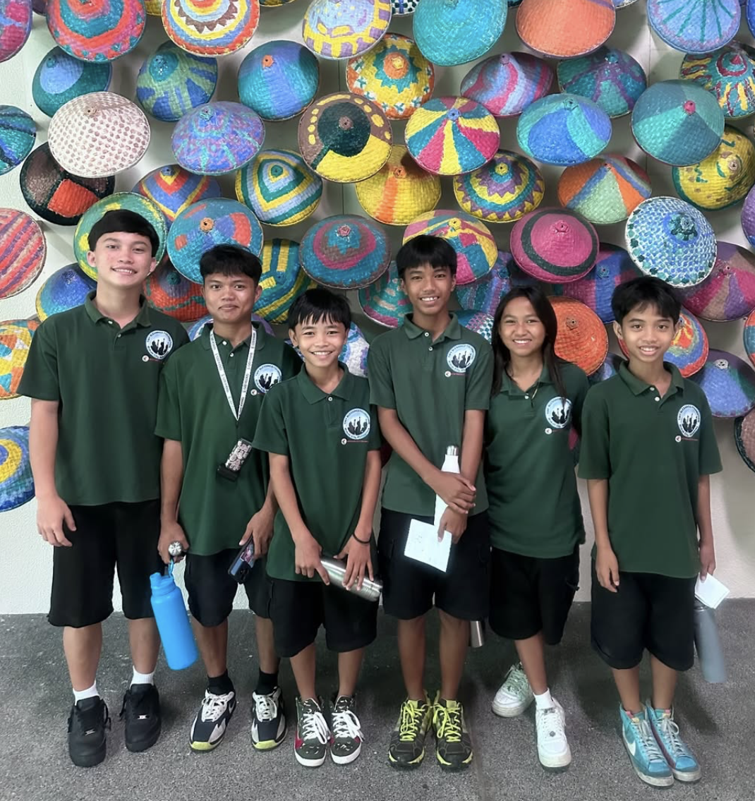
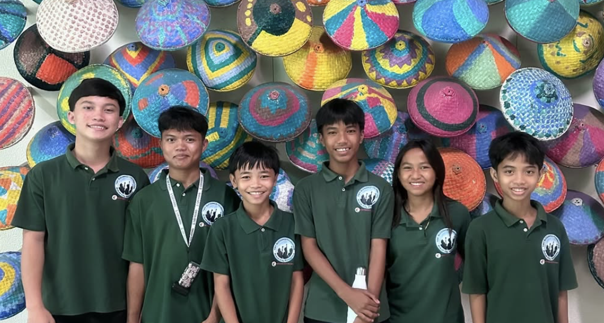

Six of our oldest students visiting ISM as part of a learning opportunity
Supporting children in Makati through education and care
The Tiny Blessings Foundation (TBF) is a community-led initiative providing education, meals, healthcare, and safe spaces for children in Manila.
Active since 2018 · Based in Makati City
About us

Hands in the dirt, hearts at work
Our Foundation
Tiny Blessings Foundation was established in 2018 to support children in Makati City living in extreme poverty through consistent, community-led care.
We focus on three essentials: education, nutrition, and safe environments where children can learn and grow with dignity.
Our programs are run with local volunteers and community partners, reaching children through weekly learning sessions, feeding programs, and on-the-ground support in vulnerable areas of the city.
Daily Meals
We provide daily meals and food support for children facing food insecurity, ensuring they receive the nourishment they need to stay healthy, focused, and ready to learn each day.
Education
We offer educational programs with learning support, literacy development, and school assistance that help children build the essential skills they need to succeed in school and beyond.
Physical Well-being
We promote healthy living through sports and meaningful activities that encourage teamwork, physical fitness, confidence, and emotional well-being, while also providing basic medical and dental support for the children.
Safe Space
We create safe and nurturing environments for children during the day, giving them a secure place to rest, learn, and grow away from the dangers of street life.
Measured impact

Volunteer dental care provided through community health outreach
Our Impact
Every number reflects real children receiving consistent education, meals, healthcare support, and safe community-based care through our programs in Makati City.
These outcomes are made possible through local volunteers and partner communities working together to ensure children are supported not only in the moment, but given long-term opportunities to learn, grow, and thrive.
Our impact is measured in both immediate relief and lasting change — from nutrition and education to access to essential health services.
Community stories
Stories from our community
Real moments from children and families supported through our education, nutrition, and care programs in Makati City.

Visiting International School Manila with ISM Scholars
Six of our oldest students visited International School Manila as part of a learning opportunity supported by ISM and RISE Philippines.
They experienced a new academic environment and participated in a school assembly.

Accepted into Food for Hungry Minds
Mikmik was accepted into a scholarship school after years of consistent academic effort and resilience.
Her journey reflects steady progress supported by community care.

A day of learning at Xanadu Farm
Children experienced hands-on learning by harvesting vegetables and understanding where food comes from.
The experience connected classroom learning with real life.

A youth leader guiding younger children
One of our eldest youth participants now supports younger children in structured play and learning activities.
He demonstrates responsibility, patience, and leadership.
Community moments
Moments from our community
Daily moments from our programs, community work, and the children we support.


Follow our journey on Instagram
Updates, stories, and real impact on Instagram. Join our community to see the progress we make together.
Get involved
Take Action Today
Your support helps provide education, meals, healthcare, and safe learning environments for children in Makati. Every form of support contributes directly to ongoing community programs.
Supports meals, learning materials, and daily program operations.
Provides consistent funding for education, care, and stability.
Directly supports a child’s education, nutrition, and daily needs.
Share your time, skills, or expertise to support programs and activities.
[add contact?]
How to Donate:
Bank Transfer
Account Name: [NAME]
Account Number: [XXXX XXXX XXXX]
Bank: [BANK NAME]
GCash
Name: [NAME]
Number: [09XX XXX XXXX]
PayPal
[paypal@email.com]
Venmo / Zelle
Venmo: [@username]
Zelle: [email or phone]